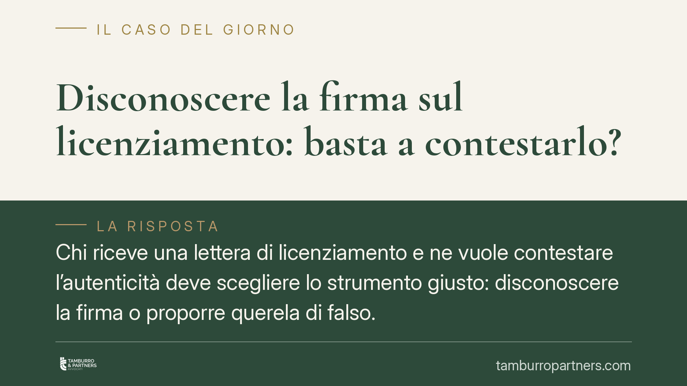

Disconoscere la firma sul licenziamento: basta a contestarlo?
Chi riceve una lettera di licenziamento e ne vuole contestare l'autenticità deve scegliere lo strumento giusto: disconoscere la firma o proporre querela di falso. Si tratta di due strade diverse, con oneri probatori opposti. La Suprema Corte ha ribadito l'orientamento consolidato in materia. Capire la differenza è decisivo, perché un errore di impostazione può pregiudicare l'intera difesa.

Il nodo: due strumenti, due logiche opposte
La contestazione dell'autenticità di una lettera di licenziamento passa per due vie processuali distinte. Confonderle è l'errore più frequente, e il più costoso.
La prima via è il disconoscimento della scrittura privata (artt. 214 e seguenti del codice di procedura civile). Serve quando il lavoratore nega di aver apposto la propria firma o di aver ricevuto un documento a lui attribuito. La seconda via è la querela di falso, necessaria quando si ammette di aver firmato ma si sostiene che il contenuto sia stato alterato, manipolato o aggiunto dopo la sottoscrizione.
La differenza non è formale. Cambia radicalmente chi deve provare cosa.
Inquadramento normativo
L'art. 214 c.p.c. consente a chi contro cui è prodotta una scrittura privata di disconoscerla. Ma il disconoscimento deve essere tempestivo: l'art. 215 c.p.c. stabilisce che la scrittura si ha per riconosciuta se la parte non la contesta in modo specifico nella prima udienza o nella prima risposta successiva alla produzione. È il cosiddetto riconoscimento tacito. Il silenzio, o una contestazione generica, equivalgono ad ammissione.
Se il disconoscimento è tempestivo e specifico, scatta l'art. 216 c.p.c.: chi ha prodotto il documento e intende avvalersene deve chiederne la verificazione, cioè l'accertamento giudiziale dell'autenticità, in genere tramite perizia grafica. L'onere grava quindi sulla parte che vuole usare la scrittura. Finché la verificazione non è positivamente conclusa, la scrittura privata disconosciuta resta priva di efficacia probatoria piena.
Diverso è il caso della querela di falso. Chi ammette la firma ma contesta il contenuto non può limitarsi a negare: deve attivare un procedimento specifico e assume su di sé l'onere di dimostrare la falsità. Il mero disconoscimento, in questo scenario, è inutilizzabile.
Implicazioni pratiche
Per il lavoratore. Se non ha mai firmato, deve disconoscere la firma subito, con una contestazione specifica, già nella prima difesa. A quel punto l'onere di provare l'autenticità ricade sull'azienda. Se invece ammette la firma ma contesta che il testo sia stato modificato, il disconoscimento non basta: occorre la querela di falso, con i suoi oneri più gravosi. Scegliere lo strumento sbagliato significa, di fatto, non contestare nulla.
Per l'azienda datrice di lavoro. Chi produce la lettera deve essere pronto a sostenere la verificazione se il lavoratore disconosce la firma. Conservare documentazione idonea a provare la provenienza dell'atto — originali, modalità di consegna, eventuali ricevute — diventa essenziale. Se la verificazione non ha esito positivo, la lettera disconosciuta non regge come prova del licenziamento.
La tempestività è l'elemento decisivo
Il punto su cui si gioca quasi sempre la partita è il tempo. Il riconoscimento tacito dell'art. 215 c.p.c. non perdona ritardi. Una contestazione fatta tardi, o formulata in modo vago, produce lo stesso effetto dell'ammissione: la scrittura si considera riconosciuta e non è più contestabile su quel piano.
Per questo la difesa va impostata con precisione fin dal primo atto. Non esiste una seconda occasione per disconoscere.
Cosa fare in concreto
- Qualificare subito la contestazione: stabilire se si nega la firma (disconoscimento) o si ammette la firma contestando il contenuto (querela di falso).
- Disconoscere in modo tempestivo e specifico, già nella prima difesa utile, per evitare il riconoscimento tacito ex art. 215 c.p.c.
- Conservare ogni documento rilevante sulla provenienza e consegna dell'atto, in vista di un'eventuale verificazione.
- Valutare gli oneri probatori connessi a ciascuno strumento prima di agire: disconoscimento e querela di falso distribuiscono il carico della prova in modo opposto.
- Definire lo strumento processuale sin dall'inizio del giudizio: l'impostazione va fissata nel primo atto e non è modificabile in corsa.
In questa materia contano non solo le ragioni, ma anche il modo in cui si contestano gli atti. Un diritto fondato può restare privo di tutela per un errore di metodo processuale.
*Nota: gli estremi di provvedimenti giurisprudenziali eventualmente richiamati vanno sempre verificati nelle fonti ufficiali prima di qualsiasi uso processuale.*
Ogni storia di lavoro ha i suoi tempi.
Se gestisci HR e vuoi un confronto su contenzioso, ispezioni o licenziamenti, scrivi allo studio. Ti rispondiamo entro un giorno lavorativo.